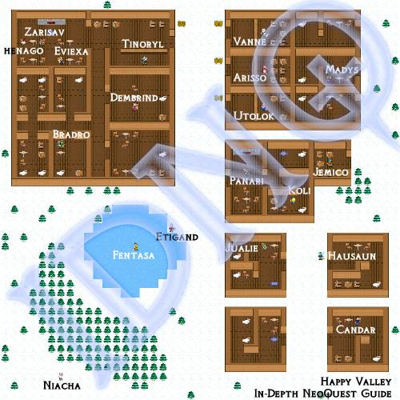

NeoQuest II Maps
Helping you find your way around NeoQuest II...
Meridell | Terror Mountain | Lost Desert | Haunted Woods | Faerieland
| Happy Valley  Talk to Jualie first, then the lost kid (Niacha), then return to Jualie, and only then buy anything. | ||||||||
|


Available maps for this act:
- Terror Mountain - South Pass: First the closest cave, then the city (inn), then the further cave.
- Chia Oscuro: You have to beat Leximp to get the Wordstone, at which point an inn and the shops become available.
- Damp Smelly Cave: You don't really need this one. Fight Leximp, and then go back to the Chia Oscuro to rest.
- Caves of Terror: Simple - start at the bottom, end at the top.
- Eastern Pass - Overall: Maps the whole eastern pass. You may use the sections if you need a bigger map.
- Eastern Pass - Sector 1: Sector 1 - Caves of Terror exit, Mountainside Inn.
- Mountainside Inn (Level 1): Talk to the innkeeper to rest. Talinia will join you on your travels.
- Mountainside Inn (Level 2): Full of useless people.
- Happy Valley: Talk to Jualie first, then the lost kid (Niacha), then return to Jualie, and only then buy anything.
- Eastern Pass - Sector 2: Sector 2 - Kolvars.
- Eastern Pass - Sector 3: Sector 3 - Happy Valley.
- Eastern Pass - Sector 4: Sector 4 - Adventurers' Camp, Lost Caves.
- Adventurers' Camp: The Tent-looking structure is actually a camp. One of the people acts like an inn :).
- Lost Caves (level 1): Fairly straightforward - just walk from entrance to Level 2.
- Lost Caves (level 2): Walk from the Level 1 stairs to the Level 3 stairs. Simple.
- Lost Caves (level 3): Why is this even called a cave?
- Lost Caves (level 4): Talk to the snowager for the explanation about this act's boss. Then, head to the mountain top.
- Mountain Top: Approach Scuzzy and fight him to win the act.